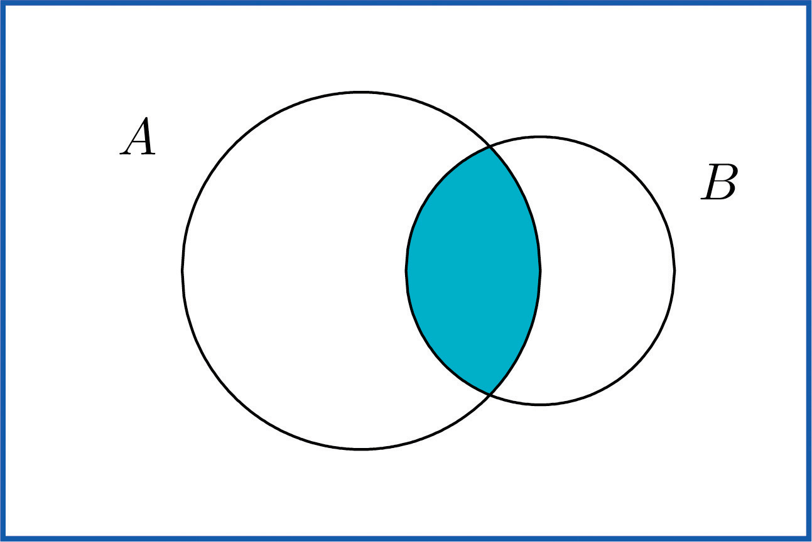
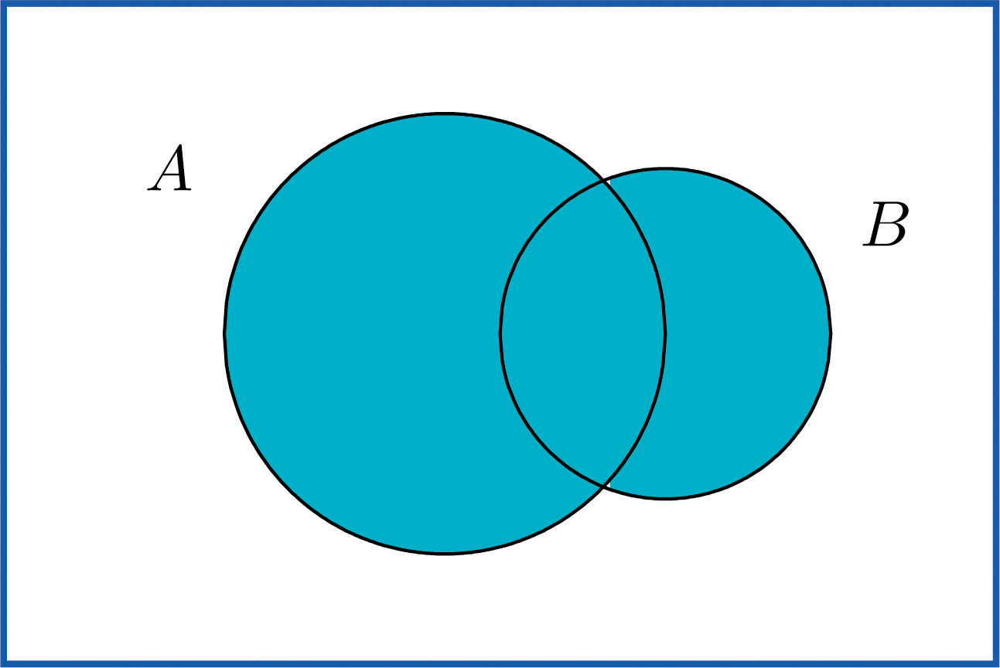

Some events can be naturally expressed in terms of other, sometimes simpler, events.
The complement of an eventThe event does not occur. A in a sample space S, denoted Ac, is the collection of all outcomes in S that are not elements of the set A. It corresponds to negating any description in words of the event A.
Two events connected with the experiment of rolling a single die are E: “the number rolled is even” and T: “the number rolled is greater than two.” Find the complement of each.
Solution:
In the sample space the corresponding sets of outcomes are and The complements are and
In words the complements are described by “the number rolled is not even” and “the number rolled is not greater than two.” Of course easier descriptions would be “the number rolled is odd” and “the number rolled is less than three.”
If there is a 60% chance of rain tomorrow, what is the probability of fair weather? The obvious answer, 40%, is an instance of the following general rule.
This formula is particularly useful when finding the probability of an event directly is difficult.
Find the probability that at least one heads will appear in five tosses of a fair coin.
Solution:
Identify outcomes by lists of five hs and ts, such as and Although it is tedious to list them all, it is not difficult to count them. Think of using a tree diagram to do so. There are two choices for the first toss. For each of these there are two choices for the second toss, hence outcomes for two tosses. For each of these four outcomes, there are two possibilities for the third toss, hence outcomes for three tosses. Similarly, there are outcomes for four tosses and finally outcomes for five tosses.
Let O denote the event “at least one heads.” There are many ways to obtain at least one heads, but only one way to fail to do so: all tails. Thus although it is difficult to list all the outcomes that form O, it is easy to write Since there are 32 equally likely outcomes, each has probability 1/32, so , hence or about a 97% chance.
The intersection of eventsBoth events occur. A and B, denoted A ∩ B, is the collection of all outcomes that are elements of both of the sets A and B. It corresponds to combining descriptions of the two events using the word “and.”
To say that the event A ∩ B occurred means that on a particular trial of the experiment both A and B occurred. A visual representation of the intersection of events A and B in a sample space S is given in Figure 3.4 "The Intersection of Events ". The intersection corresponds to the shaded lens-shaped region that lies within both ovals.
Figure 3.4 The Intersection of Events A and B
In the experiment of rolling a single die, find the intersection E ∩ T of the events E: “the number rolled is even” and T: “the number rolled is greater than two.”
Solution:
The sample space is Since the outcomes that are common to and are 4 and 6,
In words the intersection is described by “the number rolled is even and is greater than two.” The only numbers between one and six that are both even and greater than two are four and six, corresponding to E ∩ T given above.
A single die is rolled.
Solution:
In both cases the sample space is and the event in question is the intersection of the previous example.
The information on the probabilities of the six outcomes that we have so far is
Since and the probabilities of all six outcomes add up to 1,
Thus , so In particular Therefore
Events A and B are mutually exclusiveEvents that cannot both occur at once. if they have no elements in common.
For A and B to have no outcomes in common means precisely that it is impossible for both A and B to occur on a single trial of the random experiment. This gives the following rule.
Events A and B are mutually exclusive if and only if
Any event A and its complement Ac are mutually exclusive, but A and B can be mutually exclusive without being complements.
In the experiment of rolling a single die, find three choices for an event A so that the events A and E: “the number rolled is even” are mutually exclusive.
Solution:
Since and we want A to have no elements in common with E, any event that does not contain any even number will do. Three choices are {1,3,5} (the complement Ec, the odds), {1,3}, and {5}.
The union of eventsOne or the other event occurs. A and B, denoted A ∪ B, is the collection of all outcomes that are elements of one or the other of the sets A and B, or of both of them. It corresponds to combining descriptions of the two events using the word “or.”
To say that the event A ∪ B occurred means that on a particular trial of the experiment either A or B occurred (or both did). A visual representation of the union of events A and B in a sample space S is given in Figure 3.5 "The Union of Events ". The union corresponds to the shaded region.
Figure 3.5 The Union of Events A and B
In the experiment of rolling a single die, find the union of the events E: “the number rolled is even” and T: “the number rolled is greater than two.”
Solution:
Since the outcomes that are in either or (or both) are 2, 3, 4, 5, and 6, Note that an outcome such as 4 that is in both sets is still listed only once (although strictly speaking it is not incorrect to list it twice).
In words the union is described by “the number rolled is even or is greater than two.” Every number between one and six except the number one is either even or is greater than two, corresponding to E ∪ T given above.
A two-child family is selected at random. Let B denote the event that at least one child is a boy, let D denote the event that the genders of the two children differ, and let M denote the event that the genders of the two children match. Find B ∪ D and
Solution:
A sample space for this experiment is , where the first letter denotes the gender of the firstborn child and the second letter denotes the gender of the second child. The events B, D, and M are
Each outcome in D is already in B, so the outcomes that are in at least one or the other of the sets B and D is just the set B itself:
Every outcome in the whole sample space S is in at least one or the other of the sets B and M, so
The following Additive Rule of Probability is a useful formula for calculating the probability of
The next example, in which we compute the probability of a union both by counting and by using the formula, shows why the last term in the formula is needed.
Two fair dice are thrown. Find the probabilities of the following events:
Solution:
As was the case with tossing two identical coins, actual experience dictates that for the sample space to have equally likely outcomes we should list outcomes as if we could distinguish the two dice. We could imagine that one of them is red and the other is green. Then any outcome can be labeled as a pair of numbers as in the following display, where the first number in the pair is the number of dots on the top face of the green die and the second number in the pair is the number of dots on the top face of the red die.
From the table we can see that there are 11 pairs that correspond to the event in question: the six pairs in the fourth row (the green die shows a four) plus the additional five pairs other than the pair 44, already counted, in the fourth column (the red die is four), so the answer is 11/36. To see how the formula gives the same number, let AG denote the event that the green die is a four and let AR denote the event that the red die is a four. Then clearly by counting we get and Since , ; this is the computation in part (a), of course. Thus by the Additive Rule of Probability,
A tutoring service specializes in preparing adults for high school equivalence tests. Among all the students seeking help from the service, 63% need help in mathematics, 34% need help in English, and 27% need help in both mathematics and English. What is the percentage of students who need help in either mathematics or English?
Solution:
Imagine selecting a student at random, that is, in such a way that every student has the same chance of being selected. Let M denote the event “the student needs help in mathematics” and let E denote the event “the student needs help in English.” The information given is that , , and The Additive Rule of Probability gives
Note how the naïve reasoning that if 63% need help in mathematics and 34% need help in English then 63 plus 34 or 97% need help in one or the other gives a number that is too large. The percentage that need help in both subjects must be subtracted off, else the people needing help in both are counted twice, once for needing help in mathematics and once again for needing help in English. The simple sum of the probabilities would work if the events in question were mutually exclusive, for then is zero, and makes no difference.
Volunteers for a disaster relief effort were classified according to both specialty (C: construction, E: education, M: medicine) and language ability (S: speaks a single language fluently, T: speaks two or more languages fluently). The results are shown in the following two-way classification table:
| Specialty | Language Ability | |
|---|---|---|
| S | T | |
| C | 12 | 1 |
| E | 4 | 3 |
| M | 6 | 2 |
The first row of numbers means that 12 volunteers whose specialty is construction speak a single language fluently, and 1 volunteer whose specialty is construction speaks at least two languages fluently. Similarly for the other two rows.
A volunteer is selected at random, meaning that each one has an equal chance of being chosen. Find the probability that:
Solution:
When information is presented in a two-way classification table it is typically convenient to adjoin to the table the row and column totals, to produce a new table like this:
| Specialty | Language Ability | Total | |
|---|---|---|---|
| S | T | ||
| C | 12 | 1 | 13 |
| E | 4 | 3 | 7 |
| M | 6 | 2 | 8 |
| Total | 22 | 6 | 28 |
The probability sought is The third row total and the grand total in the sample give The second column total and the grand total give Thus using the result from part (a),
or about a 43% chance.
This probability can be computed in two ways. Since the event of interest can be viewed as the event C ∪ E and the events C and E are mutually exclusive, the answer is, using the first two row totals,
On the other hand, the event of interest can be thought of as the complement Mc of M, hence using the value of computed in part (b),
as before.
For the sample space identify the complement of each event given.
For the sample space identify the complement of each event given.
The sample space for three tosses of a coin is
Define events
For the experiment of rolling a single six-sided die once, define events
A special deck of 16 cards has 4 that are blue, 4 yellow, 4 green, and 4 red. The four cards of each color are numbered from one to four. A single card is drawn at random. Define events
In the context of the previous problem, define events
The Venn diagram provided shows a sample space and two events A and B. Suppose , , , , and Confirm that the probabilities of the outcomes add up to 1, then compute the following probabilities.
The Venn diagram provided shows a sample space and two events A and B. Suppose , , , and Confirm that the probabilities of the outcomes add up to 1, then compute the following probabilities.
Confirm that the probabilities in the two-way contingency table add up to 1, then use it to find the probabilities of the events indicated.
| U | V | W | |
|---|---|---|---|
| A | 0.15 | 0.00 | 0.23 |
| B | 0.22 | 0.30 | 0.10 |
Confirm that the probabilities in the two-way contingency table add up to 1, then use it to find the probabilities of the events indicated.
| R | S | T | |
|---|---|---|---|
| M | 0.09 | 0.25 | 0.19 |
| N | 0.31 | 0.16 | 0.00 |
Make a statement in ordinary English that describes the complement of each event (do not simply insert the word “not”).
Make a statement in ordinary English that describes the complement of each event (do not simply insert the word “not”).
The sample space that describes all three-child families according to the genders of the children with respect to birth order is
For each of the following events in the experiment of selecting a three-child family at random, state the complement of the event in the simplest possible terms, then find the outcomes that comprise the event and its complement.
The sample space that describes the two-way classification of citizens according to gender and opinion on a political issue is
where the first letter denotes gender (m: male, f: female) and the second opinion (f: for, a: against, n: neutral). For each of the following events in the experiment of selecting a citizen at random, state the complement of the event in the simplest possible terms, then find the outcomes that comprise the event and its complement.
A tourist who speaks English and German but no other language visits a region of Slovenia. If 35% of the residents speak English, 15% speak German, and 3% speak both English and German, what is the probability that the tourist will be able to talk with a randomly encountered resident of the region?
In a certain country 43% of all automobiles have airbags, 27% have anti-lock brakes, and 13% have both. What is the probability that a randomly selected vehicle will have both airbags and anti-lock brakes?
A manufacturer examines its records over the last year on a component part received from outside suppliers. The breakdown on source (supplier A, supplier B) and quality (H: high, U: usable, D: defective) is shown in the two-way contingency table.
| H | U | D | |
|---|---|---|---|
| A | 0.6937 | 0.0049 | 0.0014 |
| B | 0.2982 | 0.0009 | 0.0009 |
The record of a part is selected at random. Find the probability of each of the following events.
Individuals with a particular medical condition were classified according to the presence (T) or absence (N) of a potential toxin in their blood and the onset of the condition (E: early, M: midrange, L: late). The breakdown according to this classification is shown in the two-way contingency table.
| E | M | L | |
|---|---|---|---|
| T | 0.012 | 0.124 | 0.013 |
| N | 0.170 | 0.638 | 0.043 |
One of these individuals is selected at random. Find the probability of each of the following events.
The breakdown of the students enrolled in a university course by class (F: freshman, : sophomore, J: junior, : senior) and academic major (S: science, mathematics, or engineering, L: liberal arts, O: other) is shown in the two-way classification table.
| Major | Class | |||
|---|---|---|---|---|
| F | So | J | Se | |
| S | 92 | 42 | 20 | 13 |
| L | 368 | 167 | 80 | 53 |
| O | 460 | 209 | 100 | 67 |
A student enrolled in the course is selected at random. Adjoin the row and column totals to the table and use the expanded table to find the probability of each of the following events.
The table relates the response to a fund-raising appeal by a college to its alumni to the number of years since graduation.
| Response | Years Since Graduation | |||
|---|---|---|---|---|
| 0–5 | 6–20 | 21–35 | Over 35 | |
| Positive | 120 | 440 | 210 | 90 |
| None | 1380 | 3560 | 3290 | 910 |
An alumnus is selected at random. Adjoin the row and column totals to the table and use the expanded table to find the probability of each of the following events.
The sample space for tossing three coins is
“All the children are boys.”
Event: ,
Complement:
“At least two of the children are girls” or “There are two or three girls.”
Event: ,
Complement:
“At least one child is a boy.”
Event: ,
Complement:
“There are either no girls, exactly one girl, or three girls.”
Event: ,
Complement:
“The first born is a boy.”
Event: ,
Complement:
0.47